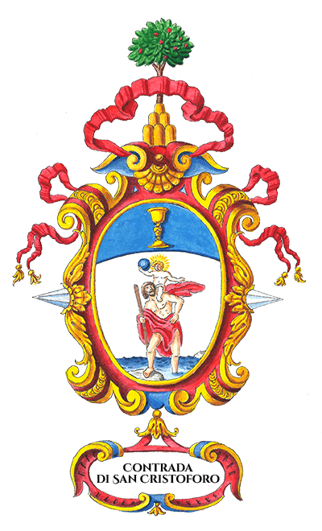

Acquasparta
Un'antica tradizione ti aspetta...
Scopri i sapori antichi, la sfida dei giochi e l'orgoglio di una fiera tradizione Bianco-Azzurra.
Esplora la TavernaLa Contrada di san Cristoforo, il cui colore stemma bianco celeste rappresenta il santo che tiene sulle spalle il bambino Gesù, deve il suo nome alla zona del centro storico di Acquasparta in cui si trova la Chiesa di San Giuseppe che risiede nell’omonima via e che fu eretta dalla Compagnia di San Giuseppe nel 1737 nel luogo appunto detto “contrada di San Cristoforo”.
La denominazione di tale luogo si deve presumibilmente ai Frati minori di Acquasparta che avevano creato una casa di accoglienza per i pellegrini nel vicolo di San Giuseppe dedicato a San Cristoforo, patrono dei viandanti e viaggiatori.
Fulcro della Contrada è rappresentata dalla “Piazzetta delle Prove”, una bellissima terrazza panoramica, al centro di Acquasparta, da cui è possibile ammirare lo stupendo scenario dei Monti Martani.
Un'esperienza gastronomica unica, dove ricette rinascimentali segrete incontrano l'eccellenza dei prodotti locali.
Non è solo una festa, è una competizione accesa. Scopri le anime che compongono la nostra Contrada.